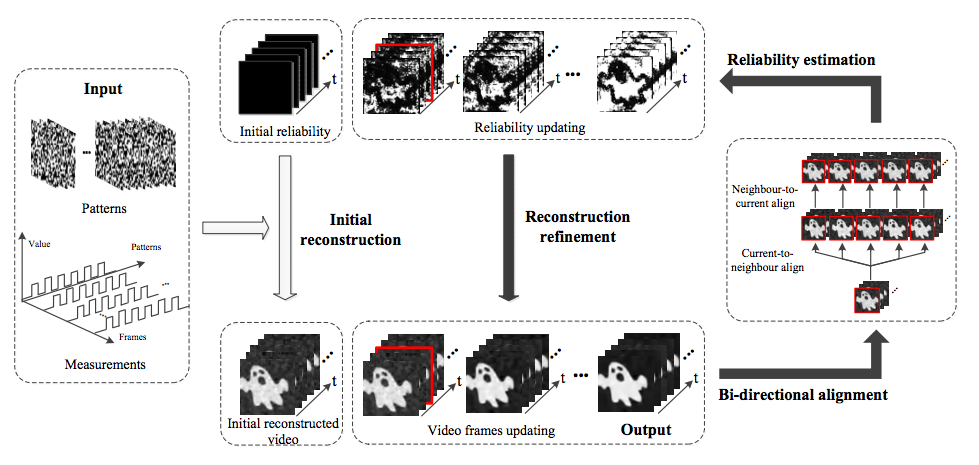

<!DOCTYPE html PUBLIC "-//W3C//DTD XHTML 1.0 Transitional//EN" "http://www.w3.org/TR/xhtml1/DTD/xhtml1-transitional.dtd">
<html xmlns="http://www.w3.org/1999/xhtml">
<head>
<meta http-equiv="Content-Type" content="text/html; charset=utf-8" />
<title>Tof_Decomposition</title>
<style type="text/css">
.arial_16 {	font-family: Arial, Helvetica, sans-serif;
	font-size: 16px;
}
.arial_22 {	font-family: Arial, Helvetica, sans-serif;
	color: #660000;
	font-size: 22px;
}
.arial_30 {	font-family: Arial, Helvetica, sans-serif;
	font-size: 30px;
	color: #660000;
	text-align: center;
	font-weight: bold;
}
.times_15 {	font-family: "Times New Roman", Times, serif;
	font-size: 15px;
}
.STYLE86 {FONT-FAMILY: "Times New Roman", Times, serif; FONT-SIZE: 14px; }
.abstract {FONT-FAMILY: "Trebuchet MS"; FONT-SIZE: 12px; }
.update_time {	color: #000000;
	font-family: Verdana, Arial, Helvetica, sans-serif;
	font-size: 14px;
}
.update_time {	font-family: Georgia, "Times New Roman", Times, serif;
}
</style>
</head>

<body>
<table width="900" border="0" cellspacing="0" cellpadding="0" align="center">
  <tr>
    <td height="35"><table width="900" border="0" cellspacing="0" cellpadding="0">
      <tr>
        <td height="35">&nbsp;</td>
      </tr>
    </table>
      <table width="900" height="92" border="0" cellpadding="0" cellspacing="0" bgcolor="#FFFFCC">
        <tr>
          <td height="70" bgcolor="#FFFFFF" class="arial_30">Content-adaptive ghost imaging of<br />
          dynamic scenes</td>
        </tr>
        <tr>
          <td width="900" height="13" bgcolor="#FFFFFF">&nbsp;</td>
        </tr>
      </table>
      <table width="900" height="351" border="0" cellpadding="0" cellspacing="0" bgcolor="#FFFFCC">
        <tr>
          <td height="20" align="center" bgcolor="#FFFFFF">Ziwei Li<sup>1,2</sup>&nbsp;&nbsp;&nbsp;Jinli Suo<sup>1,2</sup>&nbsp;&nbsp;<strong>Xuemei Hu</strong><sup>1,2</sup>&nbsp;Qionghai Dai<sup>1,2,3</sup>&nbsp;<br />
            <sup>1</sup>Deptartment of Automation, Tsinghua University, Beijing 100084, China<br />
&nbsp;&nbsp; <sup>2 </sup>Beijing Key Laboratory of Multi-dimension and Multi-scale Computational Photography, Tsinghua Univeristy, Beijing 100084, China<br />
<sup>3 </sup>Tsinghua Berkeley Shenzhen Institute (TBSI), Shenzhen 518000, China</td>
        </tr>
        <tr>
          <td width="900" height="1" bgcolor="#FFFFFF">&nbsp;  </td>
        </tr>
        <tr>
          <td bgcolor="#FFFFFF"><div align="center">
            
          </div></td>
        </tr>
      </table>
      <table width="900" border="0" cellspacing="0" cellpadding="0">
        <tr>
          <td height="30"><p class="arial_22">Publications</p></td>
        </tr>
        <tr>
          <td>Ziwei Li, Jinli Suo, <strong>Xuemei Hu</strong>, Qionghai Dai, <a href="https://www.osapublishing.org/oe/abstract.cfm?uri=oe-24-7-7328"><em>Content adaptive ghost imaging of dynamic scene</em></a>, Optics Express(OE), 2016, 24 (7): 7328-7336.</td>
        </tr>
      </table>
      <table width="900" border="0" cellspacing="0" cellpadding="0">
        <tr>
          <td><p class="arial_22">Abstract</span></p></td>
        </tr>
        <tr>
          <td>Limited by long acquisition time of 2D ghost imaging, current ghost imaging systems are so far inapplicable for dynamic scenes. However, it’s been demonstrated that nature images are spatiotemporally redundant and the redundancy is scene dependent. Inspired by that, we propose a content-adaptive computational ghost imaging approach to achieve high reconstruction quality under a small number of measurements, and thus achieve ghost imaging of dynamic scenes. To utilize content-adaptive interframe redundancy, we put the reconstruction under an iterative reweighted optimization, with non-uniform weight computed from temporal-correlated frame sequences. The proposed approach can achieve dynamic imaging at 16fps with 6464-pixel resolution.<span class="STYLE86"><br />
          </span></td>
        </tr>
      </table>
      <table width="900" border="0" cellspacing="0" cellpadding="0">
        <tr>
          <td height="13" colspan="9"><p><span class="arial_22">Materials</span></p></td>
        </tr>
        <tr class="arial_16">
          <td width="80" height="50" align="center" valign="middle"></td>
          <td width="70" align="left" valign="middle" class="times_25"><p><a href="main.pdf">Paper</a></p></td>
          <td width="80" align="center" valign="middle"></td>
          <td width="70" align="left" valign="middle" class="arial_16"><a href="ViewMedium.mpg">Video</a></td>
          <td width="80" align="left" valign="middle"><p>&nbsp;</p></td>
          <td width="70" align="left" valign="middle" class="times_25">&nbsp;</td>
          <td width="80" align="left" valign="middle">&nbsp;</td>
          <td width="170" align="left" valign="middle" class="times_25">&nbsp;</td>
          <td width="289" align="left" valign="middle" class="times_25">&nbsp;</td>
        </tr>
      </table>
      <table width="900" border="0" cellspacing="0" cellpadding="0">
        <tr>
          <td><p class="arial_22">Bibtex</span></p></td>
        </tr>
        <tr>
          <td class="times_15">@article{li2016content,   <br>
            title={Content-adaptive ghost imaging of dynamic scenes}, <br>
            author={Li, Ziwei and Suo, Jinli and Hu, Xuemei and Dai, Qionghai}, <br>
            journal={Optics express}, <br>
            volume={24}, <br>
            number={7}, <br>
            pages={7328--7336}, <br>
            year={2016}, <br>
            publisher={Optical Society of America} <br>
          }</td>
        </tr>
      </table>
      <table width="900" border="0" cellspacing="0" cellpadding="0">
        <tr>
          <td height="15"><p class="arial_22">Acknowlegements</p></td>
        </tr>
        <tr>
          <td height="15">This work was supported by the projects of National Science Foundation of China (Nos. 61327902 and 61120106003), and NSF award 1115680.<span class="arial_16"><br />
          </span></td>
        </tr>
        <tr>
          <td height="15" align="right" class="arial_16">&nbsp;<span class="update_time">Last updated:
            <!-- #BeginDate format:wacAm3 -->Wed, 08/10/2016<!-- #EndDate -->
          </span></td>
        </tr>
      </table></td>
  </tr>
</table>
</body>
</html>
